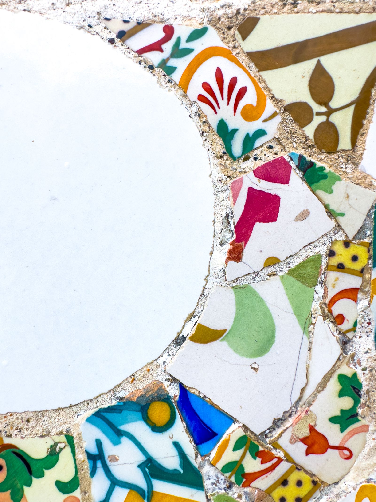

The Shoal (Um Cardume)
The ask: the Graça parish festa committee had a blank gable wall on the Rua da Graça and nine years of faded printed banners behind it. They wanted something that would still be there, unchanged, at the twentieth festa.
What I did: a shoal of sardines — the festa’s own fish — turning the corner of the wall so the piece reads from two streets. 29,725 tesserae of Venetian glass and ceramic at 20 mm, set on mesh in the studio through spring, then onto the wall across 51 working days. The andamento follows the swim: every row of tesserae leans the way a sardine leans.
The outcome: unveiled on 12 June 2026, the night of Santo António, in front of the whole street. It is now a printed stop on the festa walking route, and the committee has commissioned the opposite wall for 2028.
- Size
- 14.5 m²
- Tesserae
- 29,725
- Material
- Venetian glass & ceramic
- Setting
- 51 days, one maker